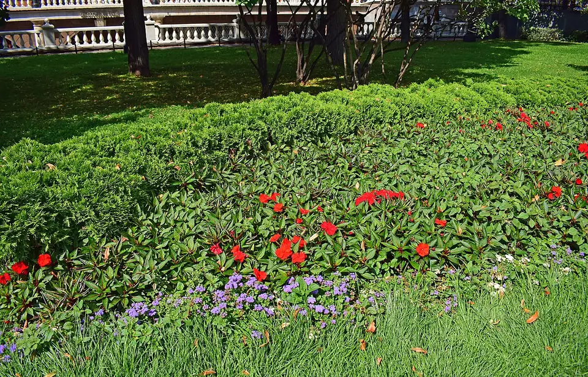
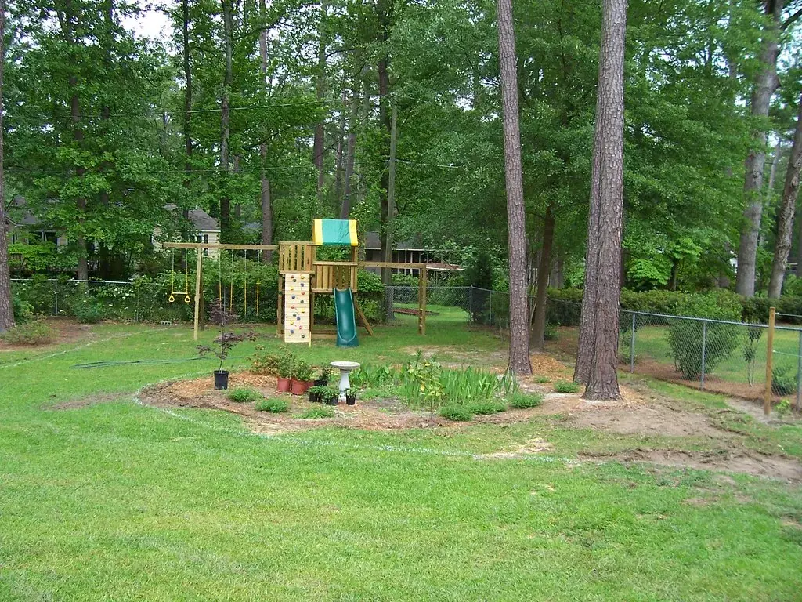
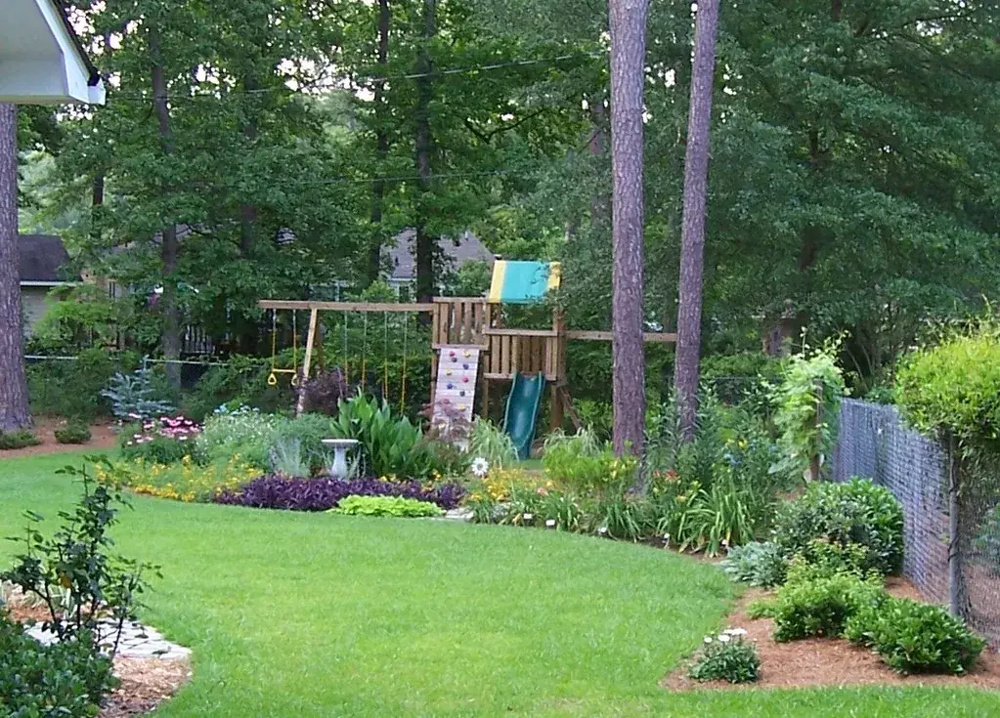
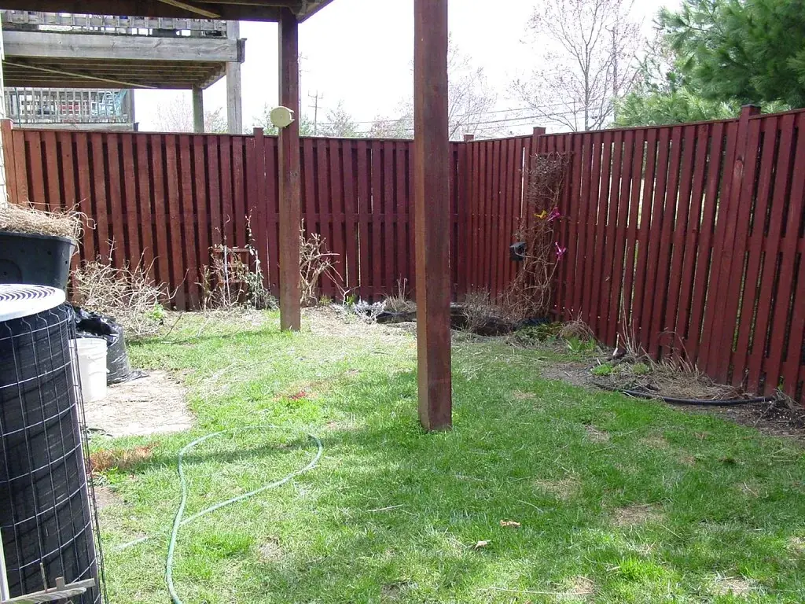
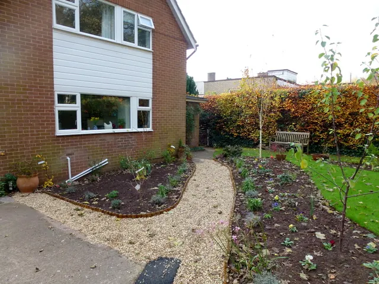
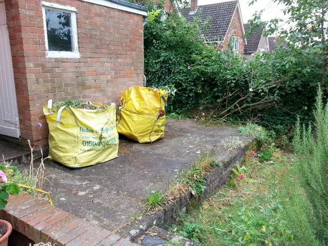
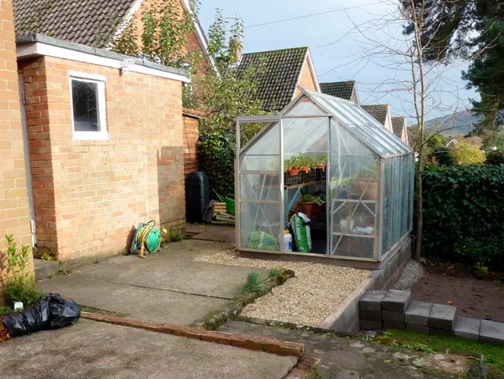
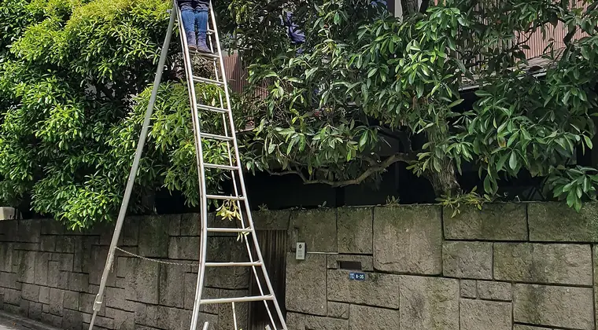
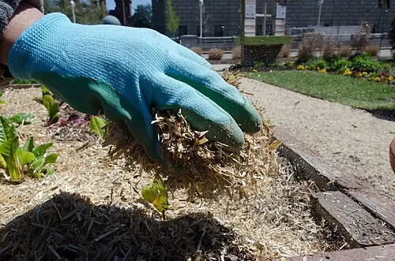
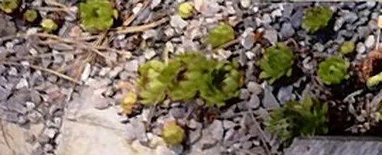

Mantenimiento
Para que tu casa, quinta o empresa esté siempre prolija, sin que tengas que pensar en ello.
- Corte de césped periódico
- Terrenos grandes con tractor corta césped
- Poda de árboles, cercos y arbustos
- Limpieza de lotes y retiro de ramas
Mantenimiento, corte de césped, poda y terrenos grandes con tractor. Y ahora también diseño y parquización de espacios verdes.

Para que tu casa, quinta o empresa esté siempre prolija, sin que tengas que pensar en ello.
Transformamos espacios verdes: los pensamos con vos, los diseñamos y los dejamos listos para disfrutar.

ANTES
DESPUÉS
ANTES
DESPUÉS
ANTES
DESPUÉS
Julio y agosto son los meses ideales para podar árboles de hoja caduca, frutales y rosales: la planta está en reposo y cicatriza mejor. Sacá primero las ramas secas, enfermas o que se cruzan.
Lo que no conviene tocar ahora son los arbustos que florecen a fines de invierno o en primavera (como el jazmín o la forsythia): si los podás, perdés las flores del año. Esos se podan apenas terminan de florecer.

Cubrí la base de las plantas con una capa de paja, hojas secas o chips de madera: abriga las raíces y guarda la humedad. En las noches más frías, tapá las especies delicadas con tela antihelada o una sábana vieja, sin que toque el suelo; nunca con nylon directo sobre las hojas.
Regá a media mañana y no de noche: la tierra húmeda retiene mejor el calor del día. Y no podes lo quemado hasta que pase el riesgo de helada, porque esas hojas protegen a las de abajo.

Para canteros que piden poca agua funcionan muy bien la lavanda, el romero, las salvias, la gaura, los agapantos, las gramíneas ornamentales y las suculentas. Agrupalas en sectores soleados y terminá con grava o mantillo para que el suelo no se seque.
En verano conviene regar temprano a la mañana o al atardecer, en profundidad y menos seguido: así las raíces bajan y la planta resiste mejor los días de calor fuerte.
Mandanos una foto del espacio y te respondemos con una idea y un presupuesto sin cargo.